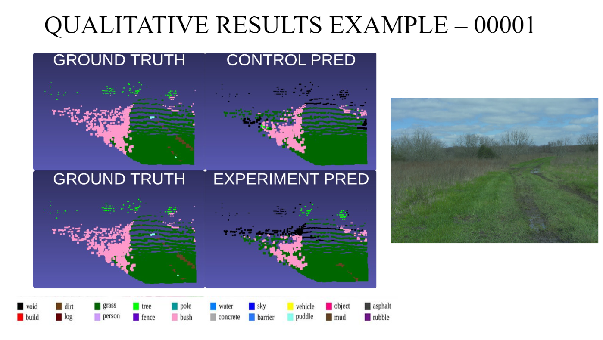
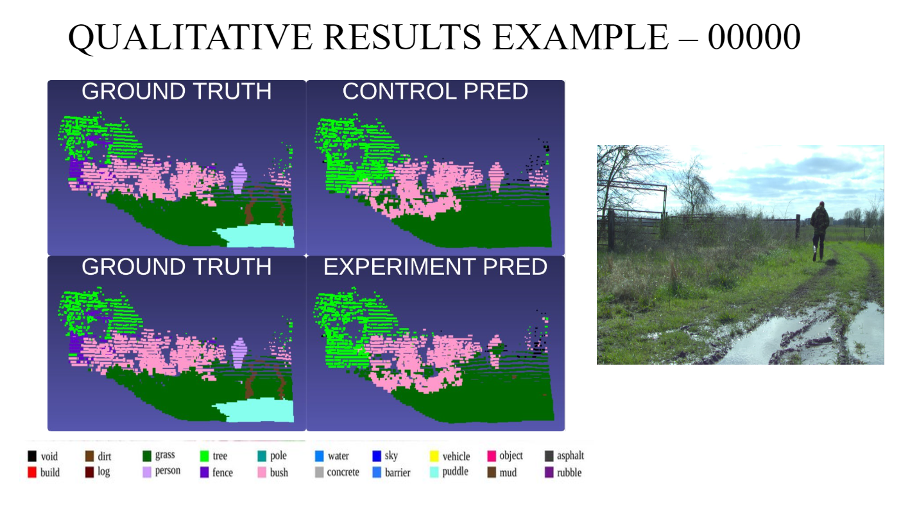
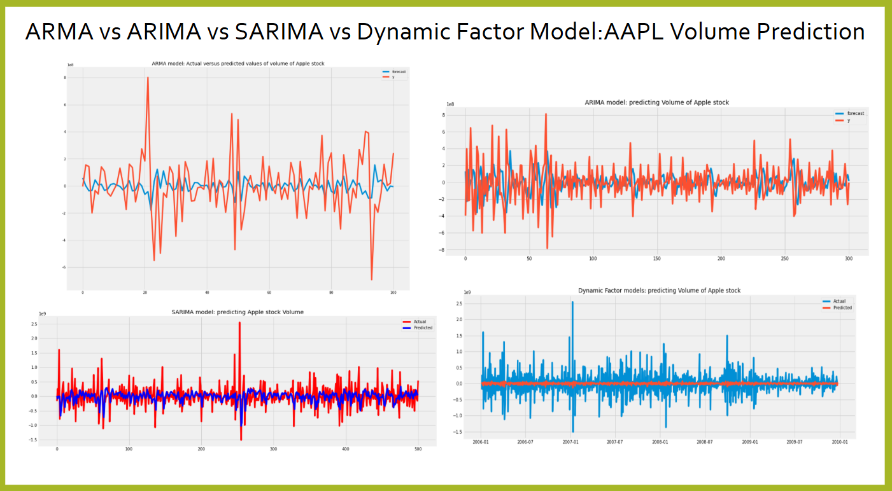
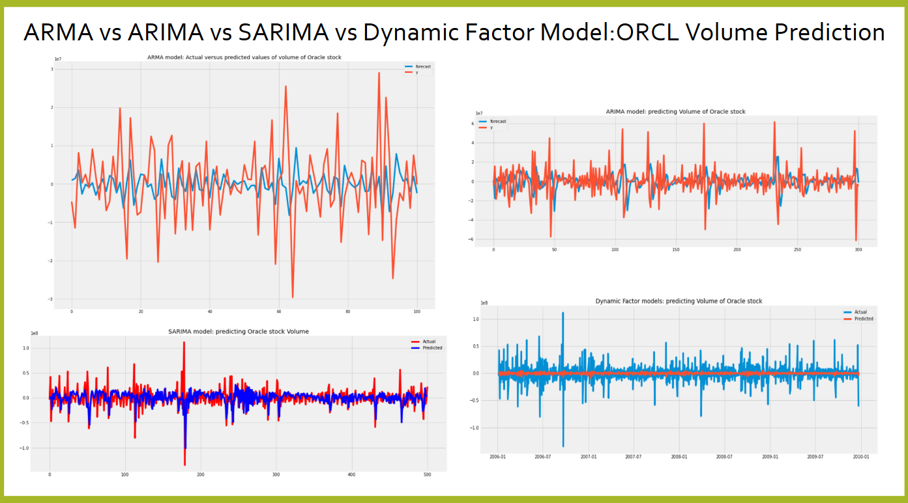

I’m a passionate computer science professional with a knack for solving real-world problems through AI, ML, robotics, and autonomous systems. If it’s a robot, I’ve probably worked with it—or at least dreamt about it! From flying drones to ground robots, I’m all in when it comes to innovation in aviation, autonomous vehicles, and intelligent systems.
I’m a fast learner (like GPT on steroids) and genuinely excited about building technologies that make the future look like a sci-fi movie. I thrive in teams but don’t let that fool you—I can handle things solo just as well. Teamwork is great, but sometimes you’ve got to show the world who’s boss (Haha, just kidding… or not?).
Now, let’s talk about the real MVPs in my life: dogs and robots. As a proud dog person, my favorite robot is none other than the Unitree Go quadruped robot—it’s a perfect combo of robotics and canine awesomeness. When I’m not working, I’m thinking about my family back in India, who are my biggest supporters, or planning to travel the world (a bucket list item I take very seriously).
Photography and editing are my creative outlets, and I love capturing the beauty of the world when I’m not coding away. As for hobbies, I enjoy playing badminton, fishing, and skating, though let’s be real—I spend more time glued to my laptop than doing any of those activities. Life as a tech enthusiast, right? But hey, I wouldn’t have it any other way. This is me in a nutshell—a techie with a funny bone and a love for adventure.
Mississippi State University, Starkville, Mississippi, USA
GPA: 4.0 (at the end of 4th Semester)
Duration: Aug 2022 - Dec 2024
R. M. D. Engineering College, Anna University, Chennai, India
GPA: 4.0
Duration: Sep 2018 - May 2022
This project involves converting a New Holland TC33D tractor into an autonomous vehicle. The transformation includes integrating sensors such as LiDAR, IMU, and an OAK-D camera for object detection. A Real-Time Kinematic (RTK) positioning system is employed for precise navigation. The entire system is controlled using ROS2 Humble, with a Jetson Orin computer handling data processing and control tasks. Electronic circuits are designed to interface with components like stepper motors, servo motors, linear actuators, and motor drivers. A PID controller is implemented to optimize system performance. Additionally, a simulation of the tractor model is created using the Ignition Gazebo simulator.
GitHubEarly fusion technique was applied to the Rellis3D dataset. This approach demonstrated improved mean Intersection over Union (mIoU) results when comparing LiDAR-only data to the fused LiDAR and camera data. Notably, the fusion method achieved enhanced segmentation accuracy in distinguishing ground surfaces, particularly between mud and grass classes. Which in turn improves the traversability estimation of ground robots/autonomous vehicles.
GitHub  This project integrates LIDAR-based obstacle avoidance with hand gesture navigation for the TurtleBot3 using ROS2 Noetic. The system processes LIDAR data to detect obstacles and determine safe movement directions. Simultaneously, it employs MediaPipe to recognize hand gestures via a PC camera, translating them into navigation commands. This dual approach enables the TurtleBot3 to navigate autonomously while responding to user gestures.
GitHubIn a custom space shooter game environment, two reinforcement learning algorithms—Deep Q-Network (DQN) and Proximal Policy Optimization (PPO)—were employed to train the agent. The game features a spaceship navigating to avoid and shoot enemies, with episodes ending upon collision. After training, PPO achieved a maximum score of 175 and an average score of 24.831 over 1,000 episodes, outperforming DQN and a random model. This indicates that PPO is more effective for this game scenario.
This project involves time series analysis and forecasting of Oracle and Apple stock data. It examines stock trends, seasonality, and changes over time using statistical techniques like resampling, normalization, rolling statistics, and decomposition. Predictive models, including ARIMA, SARIMA, and Dynamic Factor Models, are applied to forecast stock prices and volumes. Among the models, the Dynamic Factor Model achieved the best accuracy for Oracle volume prediction with the lowest RMSE because of its ability to account for multivariate dependencies and shared patterns across multiple time series, effectively capturing latent factors influencing the data, followed by SARIMA. This makes it particularly suitable for complex datasets with intertwined variables and structural relationships. SARIMA is particularly well-suited for datasets with strong seasonal patterns, providing better results in handling such complexities. In contrast, ARIMA and ARMA struggled with seasonal and multivariate data, highlighting their limitations in addressing these patterns effectively. The project emphasizes visualization using Matplotlib and Plotly, providing actionable insights into stock performance.
GitHub  A rudimentary version of a personal assistant using multiple Python libraries like pyttsx3, speech_recognition, pyjokes, and googlesearch, that plays YouTube videos, performs web searches, tells jokes, tells time and date, sends scheduled WhatsApp messages, and provides Wikipedia information.
GitHubAchieved upto 95% accuracy using OpenCV's Deep Neural Network model to detect faces and predict age and gender from images, videos, or webcam feeds. It employs pre-trained models for face detection, gender classification, and age estimation. Detected faces are annotated with predicted gender (Male/Female) and age group (e.g., 25-32), with confidence scores displayed. The system supports real-time processing and saves the results for further use, making it suitable for applications in analytics, security, and personalization.
GitHubConference: i3ce2024 (accepted and awaiting publication)
Details: Used the SphereFormer model for self-supervised labeling, eliminating manual annotation for path segmentation in autonomous navigation.
@inproceedings{yu2024lidar,
author = {Yu, J. and Saha, S. and Jayakumar, M. and Gugssa, M. and Chen, J. and Wang, J.},
title = {LiDAR-based Traversability Estimation for Ground Robots on Construction Sites using Self-Supervised Learning},
booktitle = {Proceedings of the ASCE 2024 International Conference on Computing in Civil Engineering (i3CE)},
location = {Pittsburgh, PA, USA},
date = {July 28-31, 2024}
}
Conference: i3ce2025 (In Progress)
Details: Utilized multi-modal fusion techniques to project RGB values onto the 3D point cloud through calibration procedures for traversable path segmentation in autonomous navigation.
Organization: The Computing Technology Association
Year: In-Progress
Organization: Learn Quest
Year: 2020
Organization: deeplearning.ai
Year: 2020
Organization: Amazon Web Services
Year: 2020
Organization: UC San Diego
Year: 2020
Organization: Kennesaw State University
Year: 2020
Organization: Cisco Networking Academy
Year: 2020
Organization: IIT-Madras
Year: 2019